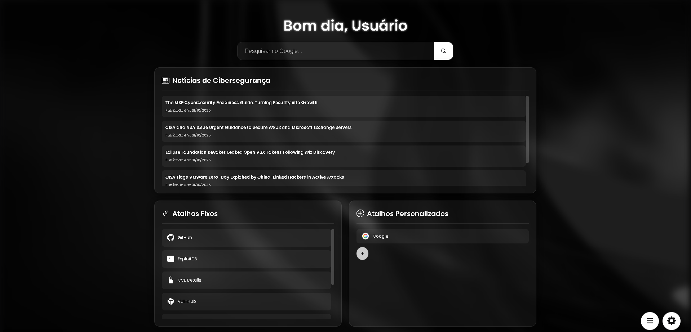

Baixar Extensão
Funcionalidades
- 💬 Saudação personalizada: Mensagem dinâmica de bom dia, boa tarde ou boa noite, com seu nome.
- 🔍 Barra de pesquisa integrada: Pesquise rapidamente no Google com Enter ou botão.
- 📌 Atalhos fixos: Links importantes como GitHub, ExploitDB, CVE Details, VulnHub, Kali Docs e Email.
- ✨ Atalhos personalizados: Crie links personalizados com ícones ou favicons automáticos, incluindo escolha de ícones via painel.
- 🕒 Histórico rápido: Acesso ao site mais recente visitado e sites mais visitados (quando usado como extensão).
- 🎨 Temas escuro: O fundo e cores se adaptam automaticamente ao tema do dispositivo.
- 🖥️ VSCode Shortcut: Abra o Visual Studio Code diretamente pelo painel.
- ✏️ Editar título da aba: Dê duplo clique e altere o título da aba dinamicamente.
- 🖼️ Background customizável: Alterne entre imagens do Unsplash ou faça upload do seu arquivo.
- 📦 Extensão completa: Instale o ZIP e transforme a nova aba do Chrome em um painel personalizado.